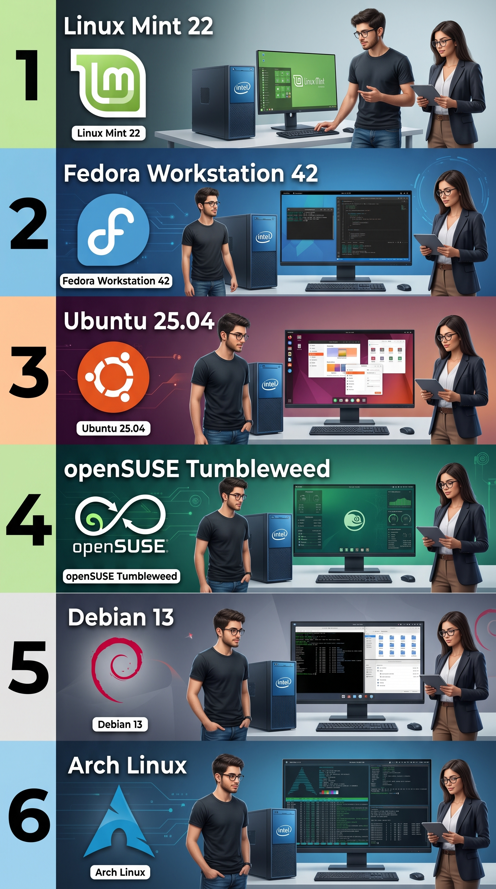

دعم المكاتب والمؤسسات
مساعدة تقنية متكاملة لتشخيص المشاكل، برامج العمل، وإدارة أجهزة المكتب عند الحاجة.
اقرأ المزيد ←
نساعد الأفراد والمكاتب في الجزائر العاصمة في مشكلات الكمبيوتر والبرامج، تثبيت Windows، وإعداد الشبكات والطابعات.
إعداد الكمبيوتر وWindows، ربط الطابعات، وضبط الشبكات حسب الحاجة.
نوفر حلولاً مصممة خصيصاً للمكاتب المستقلة والأنشطة المهنية التي تعتمد على حواسيب العمل دون وجود قسم تكنولوجيا معلومات داخلي:
دعم تقني للمكاتب والأفراد، مع تنسيق مستندات الطلبة حسب تعليمات مؤسساتهم.
مساعدة تقنية متكاملة لتشخيص المشاكل، برامج العمل، وإدارة أجهزة المكتب عند الحاجة.

فحص الأقراص، تنظيف Windows، حل مشاكل النظام، وتثبيت التعريفات لتسريع استجابة العمل.

ربط حواسيب المكتب ببعضها، مشاركة الملفات، مشاركة الطابعة، وضبط Wi-Fi مستقر.

تثبيت التعريفات الأصلية، مشاركة الطابعة عبر الشبكة، وحل مشاكل الطباعة المعلقة.

تهيئة كاملة للحواسيب الجديدة: نظام نظيف، تحديثات، برامج مكتبية، وجاهزية فورية للعمل.

هيكلة ملفات العملاء، نسخ احتياطي دوري محلي وخارجي لتقليل مخاطر فقدان البيانات.

تنسيق مستندات Word للمذكرات وتقارير التربص ومشاريع نهاية التكوين، مع فهرس وترقيم وتصدير PDF حسب تعليمات المؤسسة.
اختر المشكلة التي تواجهها لنقدم لك الحل المباشر والمناسب:
تشنج عند فتح الملفات أو إقلاع بطيء يستغرق دقائق طويلة.
رسائل خطأ في الطباعة، أو عدم تعرف الأجهزة على الطابعة المشتركة.
صعوبة رؤية الملفات المشتركة أو جهاز الأرشيف عبر الشبكة المحلية.
تحتاج لتثبيت Windows والتعريفات والبرامج المكتبية دون ضياع وقت.
تشتت الوثائق على عدة أجهزة والخوف من ضياع معاملات الزبائن.
تريد ربط أجهزة الفريق والتعاون على نفس الملفات بسهولة وسرعة.
خطوات واضحة وبسيطة من لحظة التواصل وحتى تسليم النتيجة:
تتواصل معنا عبر WhatsApp أو ترسل طلب الخدمة عبر النموذج.
نستمع لما يحدث في أجهزتك أو طبيعة ما تود إعداده في المكتب.
معاينة الحالة التقنية وتحديد سبب العطل أو الاحتياج بدقة.
توضيح الخطوات العملية المناسبة دون مبالغة أو تعقيدات.
إنجاز الصيانة، الإعداد، ربط الشبكة أو تثبيت النظام باحترافية.
التأكد من عمل الأجهزة والطابعات واستقرارها قبل إنهاء الخدمة.
نركز على الحلول العملية التي تفيد أصحاب المكاتب دون ادعاءات غير حقيقية:
نفهم طبيعة بيئة العمل المكتبي، وأهمية استقرار البرامج وسرعة استرجاع الوثائق.
نقدم ما تحتاجه فعلياً دون اقتراح برامج أو تعقيدات لا تلزم نشاطك اليومي.
شرح مبسط للمشكلة وحلها دون مصطلحات تقنية معقدة، مع متابعة واضحة.
مرونة تامة تناسب إمكانيات المؤسسات والمهن الحرة عند الحاجة الفعلية للدعم.
بديل اقتصادي ومرن جداً يغنيك عن التكاليف العالية لتوظيف تقني IT متفرغ.
سهولة التواصل وإرسال صور ورسائل الخطأ لتلقي التوجيه والمساعدة السريعة.
محمد الأمين — تقني سامي في الإعلام الآلي (Senior IT Technician).
أساعد المكاتب والمؤسسات الصغيرة في الجزائر العاصمة (مكاتب محاسبة، محاماة، موثقون، مكاتب دراسات وشركات) في حل مشاكل الحواسيب، إعداد شبكات العمل المحلية، ربط الطابعات والماسحات، وتنظيم النسخ الاحتياطي للملفات.
الهدف الأساسي لـ iComputer Urban Tech DZ هو توفير دعم تقني يعتمد عليه، يمنح صاحب المكتب راحة البال واستمرارية العمل دون الحاجة لتحمل تكلفة مسؤول IT بدوام كامل.

كل ما تحتاج معرفته حول خدمات الدعم التقني لمكتبك:
نعم، هذه هي فئتنا المستهدفة الأساسية. نركز على مكاتب المحاسبة، مكاتب المحامين، الموثقين، مكاتب الدراسات، الوكالات التجارية، والشركات التي تملك عدداً من الحواسيب ولا تملك موظف IT متفرغ.
نعم، نقدم الدعم البرمجي، تثبيت الأنظمة، وصيانة أجهزة الحواسيب للمهنيين وأصحاب المكاتب الحرة والعمل المستقل.
نعم، نقوم بتهيئة الراوتر، ربط أجهزة المكتب سلكياً أو عبر Wi-Fi، ضبط مشاركة المجلدات والصلاحيات، ومشاركة الطابعات المركزية بين جميع الموظفين.
بالتأكيد. تشمل الخدمة تثبيت نسخة Windows نظيفة ومستقرة، تثبيت التعريفات الأصلية والتحديثات، برامج العمل المكتبية الأساسية، إعداد الطابعة والبريد، ليكون الجهاز جاهزاً للاستخدام الفوري.
نعم، نقوم بتثبيت التعريفات الرسمية، ربط الطابعة عبر USB أو الشبكة (LAN / Wi-Fi)، تفعيل مشاركتها بين أجهزة المكتب، ومعالجة مشاكل طابور الطباعة.
نعم، نساعدك في تنظيم مجلدات العمل وإعداد نظام نسخ احتياطي دوري محلي وخارجي للتقليل من مخاطر فقدان ملفات العملاء أو تعرض الأجهزة للأعطال المفاجئة.
نعم، WhatsApp هو وسيلة التواصل الأساسية والمباشرة لدينا لاستقبال الاستفسارات، إرسال تفاصيل وصور المشكلة، وتنسيق موعد الدعم.
نطاق عملنا الأساسي هو الجزائر العاصمة، وتُحدد إمكانية الخدمة بحسب المنطقة.